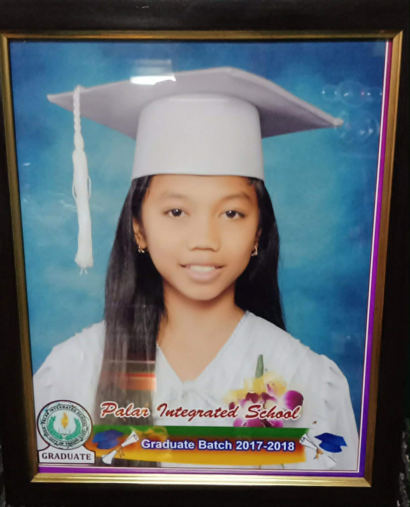

Batch of 2017-2018
"To protect and promote the right of every Filipino to quality, equitable, culture-based, and complete basic education where: Students learn in a child-friendly, gender sensitive, safe and motivating environment Teachers facilitate learning and constantly nurture every learner Administrators and staff, as stewards of the institution, ensure an enabling and supportive environment for effective learning to happen Family, community and other stakeholders are actively engaged and share responsibility for developing lifelong learners."
"We dream of Filipinos who passionately love their country and whose competencies and values enable them to realize their full potential and contribute meaningfully to building the nation. As a learner-centered public institution, the Department of Education continuously improves itself to better service its stakeholders."